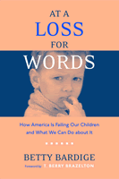

Promoting the importance of pre-literacy skills for later learning
Promoting the importance of pre-literacy skills for later learning


 Promoting the importance of pre-literacy skills for later learning
Promoting the importance of pre-literacy skills for later learning

|  |
At a Loss for WordsHow America Is Failing Our Children and What We Can Do about ItBetty Bardige, foreword by T. Berry Brazelton, M.D.paper EAN: 978-1-59213-393-2 (ISBN: 1-59213-393-2) |
"This wonderful volume not only points out the importance to each child of a strong language base, but of the emotional background which it represents.... [It] emphasizes the importance of the quality of a child's life outside the home [and] demands that we provide them with the ratio of 3:1 adults in infancy, adults who are paid, trained, and respected. We are investing in our children's future!"
—T. Berry Brazelton, M.D., from the Foreword
Drawing on the latest research on development among toddlers and preschoolers, At a Loss for Words lays out the importance of getting parents, policy makers, and child care providers to recognize the role of early literacy skills in reducing the achievement gap that begins before three years of age. Readers are guided through home and classroom settings that promote language, contrasting them with the "merely mediocre" child care settings in which more and more young children spend increasing amounts of time. Too many of our young children are not receiving the level of input and practice that will enable them to acquire language skills—the key to success in school and life. Bardige explains how to build better community support systems for children, and better public education, in order to ensure that toddlers learn the power of language from their families and teachers.
Excerpt available at www.temple.edu/tempress
"This book is essential reading for scholars, parents, and child caregivers. The author splendidly integrates decades of research to make the convincing case that our society's nurturance of the young is inadequate. To improve the rearing of our children, the first step is arming ourselves with both the knowledge and recommendations presented in this book."
—Edward Zigler, Ph.D., Sterling Professor of Psychology, Emeritus, Yale University
"At a Loss for Words provides an urgent argument for infants and toddlers to experience language in an interactive, relational way to establish crucial language skills. Bardige offers guidance on what works—at home and in society. This is must reading for everyone concerned about our children's future."
—Alvin F. Poussaint, M.D., Professor of Psychiatry, Harvard Medical School and Judge Baker Children's Center, Boston
"Bardige has written an effective blend of introductory text and instructional manual for parents, educators, advocates, and anyone else who might care about the crucial role of language in early childhood development... Highly recommended."
—Library Journal
"...examines the importance of getting parents, policymakers and child care providers to recognize the role of early literacy skills before age three."
—Report on Literacy Programs
"Bardige's book is a timely examination of how vocabulary development impacts young children's success in school.... [It] is a powerful argument for better funding of quality childcare and early childhood education programs... Policy makers, program designers, teacher educators, teachers and childcare providers will be able to use this book as a rich resource."
—Teacher's College Record
"It's full of interesting, yet sobering, information about our nation's literacy rates, as well as encouraging strategies for how parents, policy makers, and childcare providers can ensure that all children gain strong language skills early in life."
—Scholastic Parent and Child
"[A] complete and compelling assessment of the critical importance of very early childhood learning.... Parents will find At a Loss for Words a helpful guide filled with practical tips for enjoyable ways to improve home education in language skills for their young children."
—Wellesley Magazine
Foreword – T. Berry Brazelton, M.D.
Preface
Acknowledgments
Part I. Every Child's Birthright
1. Jack and Jill
2. Prime Time for Language Learning
3. Why Early Language Matters
4. Supporting Early Language at Home
5. Supporting Early Language in Group Care
6. You Don't Speak My Language
Part II. The Quiet Crisis
7. The State of Early Care and Education in the United States
8. A Perfect Storm
9. Truth, Justice, and the American Way
Part III: Changing Course
10. A Parent's Guide to Early Childhood Programs and Policy
11. Supporting Parents
12. Improving Programs for Children
13. Building Systems that Sustain Quality
14. We CAN Get There from Here
Appendix: Resources and Connections for Parents, Policy Makers, and Advocates
Notes
Index
 | Betty Bardige, Ed.D., is a developmental psychologist, educator, and child advocate. As Vice-President of the A. L. Mailman Family Foundation and board member or advisor to many educational and philanthropic organizations, she works to shape early childhood policy at local, state, and national levels. She is also the co-author, with her mother, Dr. Marilyn Segal, of Building Literacy with Love. Dr. Bardige can be reached at betty@mailman.org. |
Education
Family Policy
Political Science and Public Policy
© 2015 Temple University. All Rights Reserved. This page: http://www.temple.edu/tempress/titles/1808_reg.html.